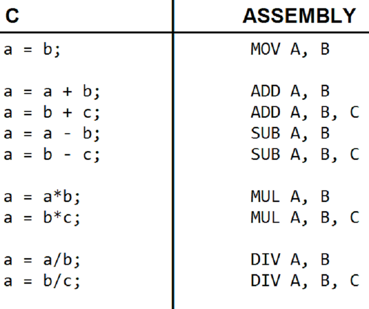

OPCODE: nome da operação, presente no conjunto de instruções do processador. É ele que permite ao computador saber o que deve ser feito. As informações que o seguem no Formato de Instrução, se é que o há, o informam com que informações ele lidará naquela tarefa.
Exemplos: Operações Matemáticas, Lógicas, de Trânsito de Dados e Controle do Computador

Exemplos de Instruções Matemáticas em C e Assembly (nessa Linguagem, o Opcode é representado pelos Códigos Mnemônicos como ADD ou MOV).